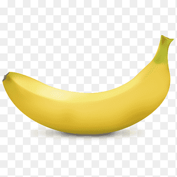

 Текст та рисунки у рядку коливаються
Послідовність рисунків пробігає знизу до гори та з'являється знову
Послідовність рисунків пробігає згори до низу із зупинкою у границі області
Текст із запізненням 100 мс
Текст із запізненням 250 мс